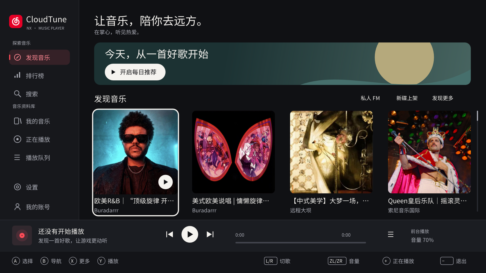
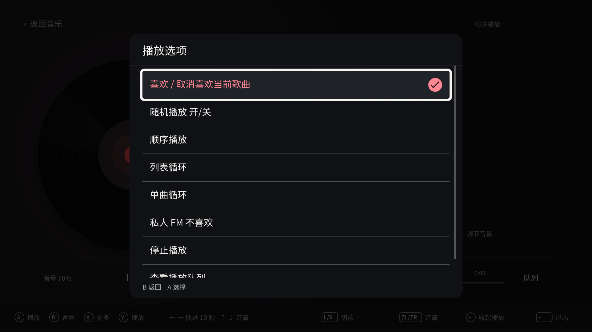
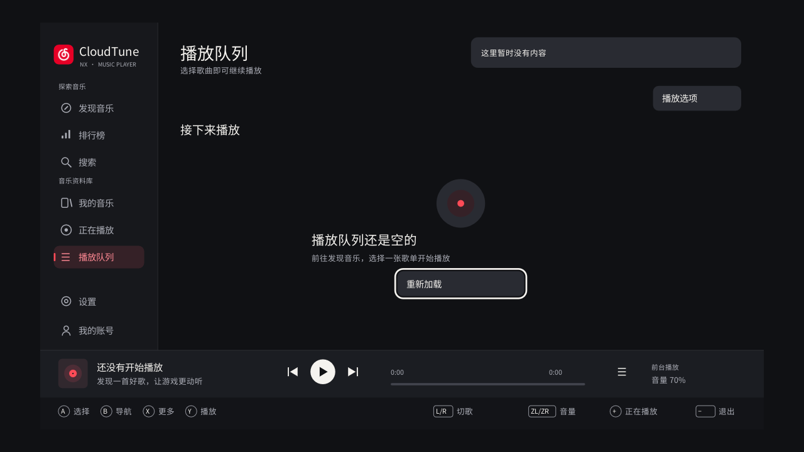

原生实现完成 · 2026.10.21CloudTune NX
在掌心，听见热爱。
已把确认的视觉方向落地到现有 Borealis / C++ 界面。此页汇总实际原生截图、功能边界和验证结果；HTML 仅用于查看验收资料。
本次实现
四列大封面、持续播放栏、沉浸式黑胶与歌词、统一的白色焦点边框、云红播放与选中语义。新增可用方向键到达的顶部操作和播放栏；全屏播放器以 UI 层打开，保留歌单历史、歌曲焦点与滚动位置。
方向键 / 左摇杆导航；A 选择，B 返回，X 更多，Y 播放暂停，L/R 切歌，ZL/ZR 音量，+ 展开或收起播放器，− 退出确认。全屏保留左右快进、上下音量。侧栏右键返回当前内容，A 才确认切页。桌面另支持 Enter / Esc、方向键、空格、X、P、Tab、F。
焦点淡入与封面轻微放大、按下反馈、页面淡入、菜单 220/160ms、封面交叉淡入、歌词跟随与唱臂过渡。黑胶在 v0.2.4 调整为 20 秒一圈，沿用网易云官方歌曲分享页的线性动画周期。设置页 X 可调整「减少动态效果」和 100% / 95% / 90% 画面范围，偏好单独存储在 ui.json。
实际原生截图
以下 28 张均由原生 MusicView 绘制，测试程序只注入合成歌曲、原创示例封面和歌词。生产应用不包含这些演示数据。二维码指向 example.invalid，不能用于登录。点击图片查看 1080p 原图。
验证与保留边界
| 验证项 | 结果 |
|---|
| 完整 CTest | 25 / 25 通过：包含音频编解码、音频恢复、账号、API、IPC、AirPlay、覆盖层与新增 UI 测试。 |
| 最终 UI 回归 | 2 / 2 通过：网格边界、顶部/侧栏/播放栏导航、稳定歌曲 ID、播放器返回、队列与歌单播放路由、FM 顶部入口。 |
| Switch 构建 | CloudTune NRO、后台服务、CloudTune OVL 三个目标构建完成。 |
| 虚拟桌面 | 原生桌面 720p/1080p；最终公开 NRO 在 Eden 掌机 / 底座模式完成渲染检查。桌面控制器路径、中文弹窗与返回已验证；本轮 Eden 键盘注入不响应，已发布 v0.2.1 同样复现，因此不将模拟器按键验收记为通过。 |
| 安全区和触摸 | 90% 画面范围下，缩放后的播放队列入口命中正确；减少动态效果和画面范围成功持久化。 |
| 业务层 | 未修改 Model、Player、API、音频、网络、AirPlay、后台服务、IPC 或覆盖层实现。所有业务操作继续调用原有接口。 |
| 需实机补验 | 物理 Switch / Joy-Con 手感、真实电视 overscan、游戏共存及持续运行表现未在本轮 UI 验收中验证。 |
实现时保留了两个平台约定：Borealis 原生长按参数为 250ms / 100ms；AirPlay 状态下 L/R 继续结束投送并切回云音乐。居中菜单复用原生 Recycler 和弹窗栈，宽度为 720 逻辑像素，容纳完整中文操作名称。
实际 Switch 构建
本次公开版包含通用主题；可选的本地照片资源与私人截图均未纳入源码或发布附件。相册打开和返回不改变播放队列或页面历史。实体 Switch 手柄与长时播放仍需实机验证。
掌机模式 · 1280×720 · 真实公开推荐内容
底座模式 · 1920×1080
早期 UI 构建的中文菜单截图；最终输入验证以桌面测试为准
90% 安全区 · 触摸打开队列
最终 CloudTune.nro SHA-256
9ae24122814b1594fbfbef5a8854f905debb49473bd0f046e0ad5fe56d34f728
本机完整日志和全部截图：build/validation/ui-redesign/。本次未发布版本或安装到物理设备。